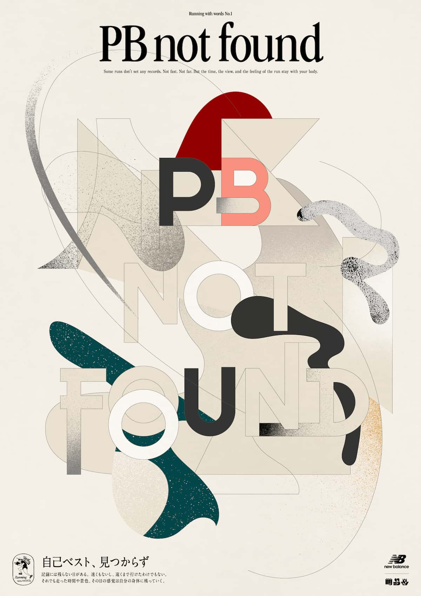
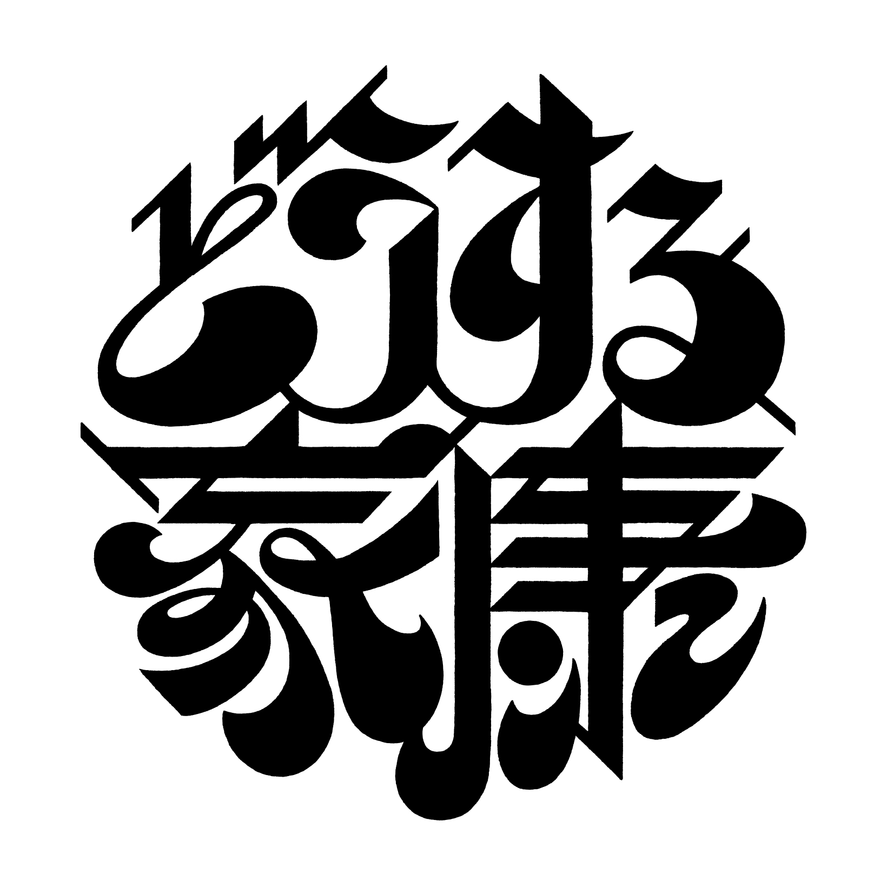

言葉が通じない相手にも、走る人の姿は伝わる。2015年に浅葉球、飯高健人、石井伶の3人で結成されたデザイン＆アートユニット、GOO CHOKI PARの仕事は、その一点に集約される。掲げるのは「言語や思考を超えたビジュアルコミュニケーション」。彼らのグラフィックは「説明」しない。代わりに身体の動きを記号まで削ぎ落とし、見る人の身体に直接届ける。東京2020のアイコニックポスターから、2026年秋のニューバランスとの最新作まで、その「動く絵」の技法を追う。
「前に進む人」――東京2020「パラリンピアン」を読む
2021年6月、東京2020の公式アートポスター20作品のなかから2点が「アイコニックポスター」に選ばれた。オリンピック側は野老朝雄の組市松紋による作品、パラリンピック側がGOO CHOKI PARの「パラリンピアン」である。IPC（国際パラリンピック委員会）のアンドリュー・パーソンズ会長は、この作品を「パラリンピックの多様性と喜び」を表すものと評した。
モチーフは「前に進む人」。大きく腕を振り、力いっぱい地面を蹴り上げる姿。彼ら自身の言葉を借りれば、「プリミティブなその運動の造形は、より確かな未来を目指して、前に進もうとする全てのパラリンピアンたちの意志を表す」。ここで効いているのは、選手の顔でもユニフォームでも国旗でもない、という選択だ。描かれているのは「走る」という動作そのものの輪郭である。誰のものか分からない身体だからこそ、誰の身体にも重なる。具象を削って運動だけを残す――これがGOO CHOKI PARの基本の型だ。
そしてこの系譜は、亀倉雄策に繋がっている。1964年の前回東京大会のポスターを手掛けたのは亀倉だった。56年を隔てて同じ「東京大会の顔」を担った二組を並べると、共通の文法が見えてくる。平色の面、強い輪郭、余白の使い方。違うのは、亀倉が国の象徴を一枚に凝縮するモダニズムの金字塔を残したのに対し、GOO CHOKI PARは象徴そのものを「人の動作」に置き換えた点だ。記号は、国のしるしから身体の動きへ移った。
言葉が、走り出す――ニューバランス「Running with words」
最新作は2026年10月、ニューバランスとの「Running with words / 言葉と、走る」だ。走ることに興味はあるのに一歩を踏み出せない人へ、10の言葉とアートワークを届けるプロジェクトで、その一部がアパレルコレクションとして10月30日から発売された。2025年から続く「Amplify of Sports（スポーツの可能性を拡張する）」プロジェクトの一環である。

たとえば「PB not found / 自己ベスト、見つからず」。記録に残らない一日にも、身体に残るものがある――そんな価値観を、言葉とグラフィックのセットで可視化する。ここでの技法は、言葉を「説明文」にしないことだ。言葉そのものをグラフィックの素材として扱い、文字の並びや余白まで含めて一枚の絵にする。コピーとビジュアルの主従をなくし、両方を同じレイヤーに置く。
この「言葉＝素材」という扱いは、タイトルロゴの仕事にも通じる（ここからはMuseの分析）。2023年のNHK大河ドラマ「どうする家康」のタイトルロゴも彼らの手によるものだ。文字が「読める」ことと、文字が「絵である」ことの境界を消すのが、彼らのタイポグラフィの特徴だと言える。

記号になる身体――ピクトグラム、グラフィティとの接続
GOO CHOKI PARの身体表現は、ピクトグラムと地続きだ。ピクトグラムが「誰にでも読める」ために身体を記号化するのに対し、彼らは記号化した身体に「感情と速度」を戻す。同じ記号の文法を使いながら、静的な「分かる」ではなく動的な「感じる」を目指す。目的が真逆なのだ。
この「記号＋エネルギー」の配合は、グラフィティやストリートの文法とも近い。素早く読めて、遠くからでも目に入り、身体の動きを誇張する。ただし彼らの線はスプレーの荒さではなく、きれいに閉じた輪郭と平色の面でできている。ストリートのエネルギーを、ポスターの精度で仕上げる――そのバランスが、ISSEY MIYAKEやNIKE、Red Bullといったクライアントワークで繰り返し求められる理由だろう（Museの分析）。
止まった絵が、動き出す――壁画と映像のあいだ
2025年8月、文化庁主催「MUSIC LOVES ART 2025」で、QVCの千葉市本社ビルの窓ガラス壁面に超巨大アートを展示した。彼らのコメントが面白い。「この巨大な平面作品を『街を歩きながら鑑賞する』ことで、鑑賞者の動きとともに時間軸が生まれ、まるで映像のように身体の躍動が立ち上がってくる」。
止まった絵に、鑑賞者の移動が時間を与える。映像ディレクターの視点で読むなら、これはカメラが動く代わりに観客が動く映像だ。モーションをつけない代わりに、見る側の身体をモーションとして使う。彼らのグラフィックが映像的である理由はここにある。動きを描くのではなく、動きを「起こす」設計なのだ。
勉強ポイント
- 動作を「誰のものか分からない身体」まで削る。 固有名を外すほど、見る人の身体に重なる。映像のカットでも、顔やロゴを外して「動きの輪郭」だけを残す実験ができる。
- 言葉を素材として扱う。 コピーとビジュアルの主従をなくし、文字の配置・余白まで絵の一部にする。タイトルやテロップの設計に応用できる。
- 止まった画に「見る側の動き」を仕込む。 壁画が歩行者の移動で時間を得たように、ポスターやキービジュアルでも視線の動線やスクロールの動きを前提に設計する。
出典
- GOO CHOKI PAR 公式サイト（作品一覧） https://gcp.design/
- 宣伝会議 AdverTimes「『家を出るだけでスポーツの始まり』ニューバランス×GOO CHOKI PAR、言葉とグラフィックでこれから走り出す人を応援」2026.11.11 https://www.advertimes.com/20261111/article563741/
- insidethegames.biz「Tokyo 2020 designates two of its official posters as iconic」2021.6.22 https://www.insidethegames.biz/articles/tokyo-2020-iconic-posters
- 日刊スポーツ「初公開！東京2020公式ポスター全20作品／一覧」2020.1.6 https://www.nikkansports.com/sports/news/202001060000157.html
- マピオン（PR TIMES）「お買い物チャンネルQVC、文化庁主催『MUSIC LOVES ART 2025』にてQVCの千葉市本社壁面に超巨大アートを展示」 https://www.mapion.co.jp/news/release/dgpr115580-all/